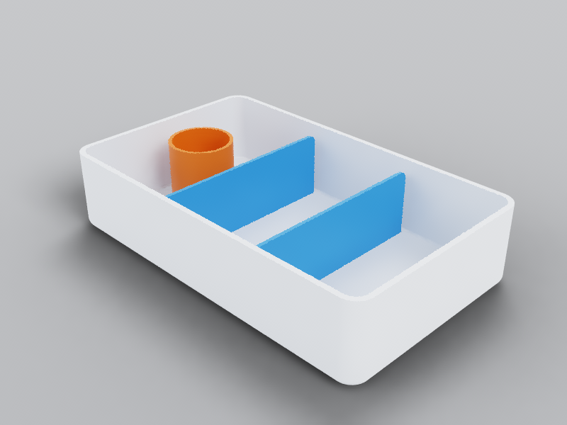

04-desk-tray
A desk organiser: a filleted open tray with two grooves across its floor, two loose dividers that drop into them, and a round pen cup standing in one bay. An assembly of four parts.


Source
Run it with cad run examples/dogfood/04-desk-tray.ts.
// A desk organiser: a filleted open tray with two grooves across its floor, two loose dividers that
// drop into them, and a round pen cup standing in one bay. An assembly of four parts.
import { assembly, box, cylinder, model, param } from "@cad/sdk";
const L = 200, W = 120, H = 45;
function tray(wall: number) {
const outer = box(L, W, H, { align: ["center", "center", "min"] }).fillet("|Z", 10).fillet("<Z", 5); // over the wall: an inward shell offsets every round by the wall
const hollow = outer.shell(">Z", -wall);
// grooves for the dividers: 2.4 mm wide, 2 mm deep into the floor, across Y, stopping short of
// the floor's inside round (run through it, they left a 0.01 mm skin the printing check failed)
const groove = box(2.4, W - 2 * wall - 4, 2, { align: ["center", "center", "min"] }).translate(0, 0, wall - 2);
return hollow.cut(groove.translate(-30, 0, 0), groove.translate(35, 0, 0));
}
function divider(wall: number) {
// 2 mm thick, stands in its 2 mm groove, and clears the walls and the floor's inside round (2 mm)
return box(2, W - 2 * wall - 5, H - wall + 2 - 5, { align: ["center", "center", "min"] }).fillet("|X and >Z", 4);
}
export const trayModel = model("desk_tray", () => tray(param("wall", 3, { min: 2, max: 5, step: 0.5, unit: "mm" }))
.label("tray", { color: "#e2e8f0", material: "pla" }));
export const organiser = model("desk_organiser", () => {
const wall = param("wall", 3, { min: 2, max: 5, step: 0.5, unit: "mm" });
const d = divider(wall);
const cup = cylinder(18, 40, { align: ["center", "center", "min"] }).shell(">Z", -2).translate(-65, 0, wall);
return assembly("organiser", [
tray(wall).label("tray", { color: "#e2e8f0", material: "pla" }),
d.translate(-30, 0, wall - 2).label("divider_a", { color: "#3182ce", material: "pla" }),
d.translate(35, 0, wall - 2).label("divider_b", { color: "#3182ce", material: "pla" }),
cup.label("pen_cup", { color: "#dd6b20", material: "pla" }),
]);
});
if (import.meta.main) {
await trayModel();
await organiser();
}